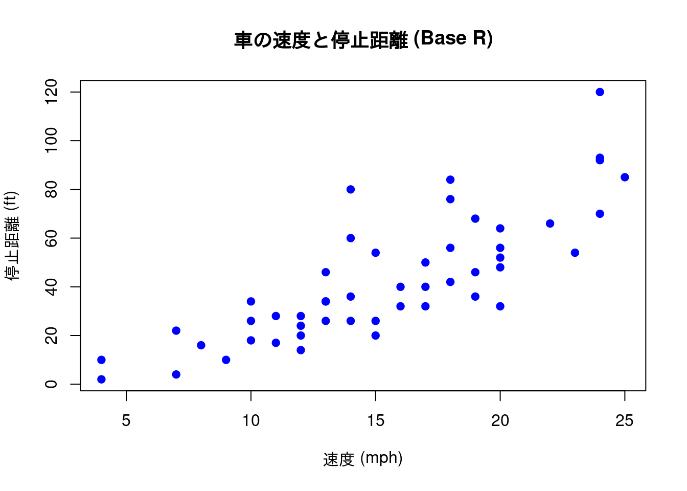
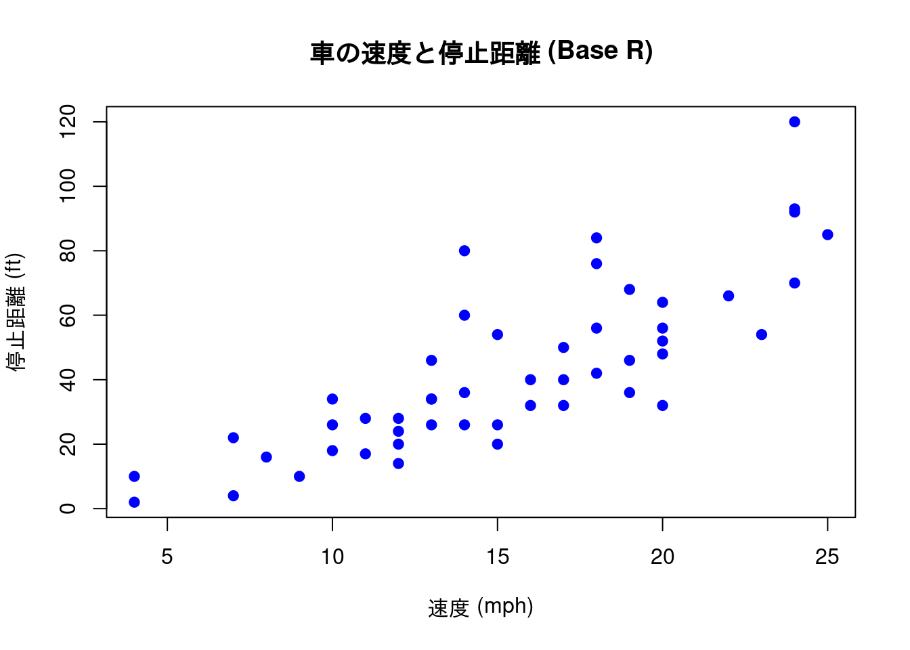
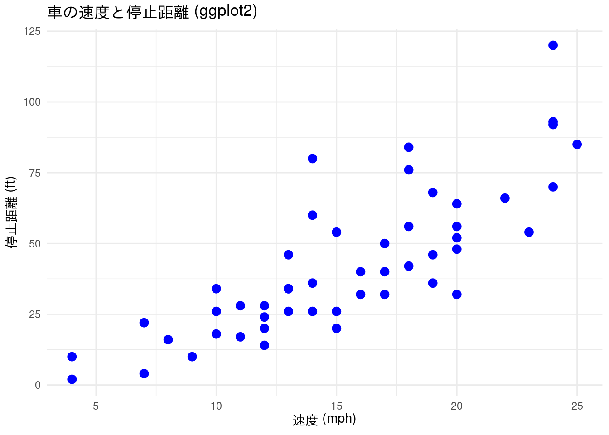

# carsデータセットを使い、スピードと停止距離の散布図を描く
plot(cars$speed, cars$dist,
main = "車の速度と停止距離 (Base R)",
xlab = "速度 (mph)",
ylab = "停止距離 (ft)",
pch = 19, # 点の形を塗りつぶしの円に
col = "blue" # 点の色を青に
)
R での作図には、大きく分けて2つの主要な方法があります。 R に元から組み込まれている Base R の作図システムと、tidyverse エコシステムの中核である ggplot2 パッケージです。
R が誕生したときから存在する、伝統的な作図システムです。 plot() 関数でキャンバス (canvas, base layer) を用意し、その上に points() で点を追加し、lines() で線を追加します。
メリット
デメリット
ggplot2 に比べてやや古風な印象を受けることがあります。# carsデータセットを使い、スピードと停止距離の散布図を描く
plot(cars$speed, cars$dist,
main = "車の速度と停止距離 (Base R)",
xlab = "速度 (mph)",
ylab = "停止距離 (ft)",
pch = 19, # 点の形を塗りつぶしの円に
col = "blue" # 点の色を青に
)
ggplot2 での作図ggplot2 は、tidyverseの一部として提供されている、非常に強力で人気の高い作図パッケージです。「グラフィックスの文法 (Grammar of Graphics)」という一貫した哲学に基づいており、「グラフとは、データ、座標系、そして点や線といった図形要素（ジオメトリ）の組み合わせである」と考えます。
LEGO ブロックのように、データ、エステティック (aesthetics) マッピング（変数をx軸、y軸、色、形などに割り当てる）、ジオメトリ (geometry) のパーツを + でつなぎ合わせてグラフを構築します。
メリット
+ で繋がっているためコードが読みやすいです。デメリット
library(ggplot2) または library(tidyverse) が必要です。aes()やgeom_\*()といった独自の「文法」を最初に学ぶ必要があります。Base R よりコードが長くなることもあります。library(ggplot2)
# 同じ散布図をggplot2で描く
ggplot(data = cars, aes(x = speed, y = dist)) +
geom_point(color = "blue", size = 3) +
labs(
title = "車の速度と停止距離 (ggplot2)",
x = "速度 (mph)",
y = "停止距離 (ft)"
) +
theme_minimal()